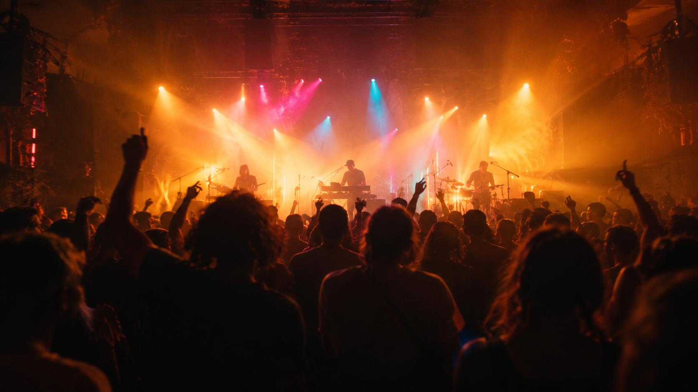

LASER GRID
光束、粒子与舞台的层次关系。

01 / CONTENT 看清页面用途与内容的阅读顺序。
02 / FRAME 先还原构图、字体、色彩与素材。
03 / FEEDBACK 让触发、变化和返回保留清楚的关系。
04 / REVIEW 使用实际输入检查，再记录差异。
05 / REUSE 复用已经实现且适合当前页面的方法。
STROBE 是一台向现场演出的视觉混音台。
把灯光、材质和实时画面放进同一个节奏。
跟随音乐，让每一次变化都有清晰的落点。
LASER GRID · LOOP 8 BAR
无声视觉预演 · 不是音频或视频播放
MAKE IT YOURS
项目顺序
当前：暖色 / 石灰绿 / 原项目顺序
SCENE LIBRARY
光束、粒子与舞台的层次关系。
让颜色在画面里形成柔和的重心。
THE ENGINE
此页面可编辑主题、强调色、开场文案和两张项目的顺序。预演只驱动自制 SVG 波形与位置，没有连接音频、舞台设备或远端服务。
本来源175.6–177.4秒只可辨STROBE黑底文字首屏：上部细行、居中双行强调与荧黄操作。此处沿既有STROBE唯一方法制作独立构图变体，文案和细行自写；旧原文件未改。下方编辑、无声预演与本地意向草稿沿既有自编流程，不是作者生成链、舞台设备或真实发送。